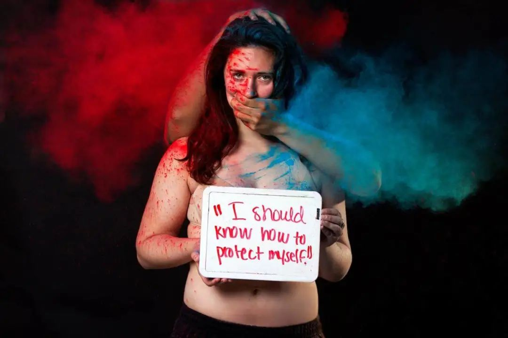
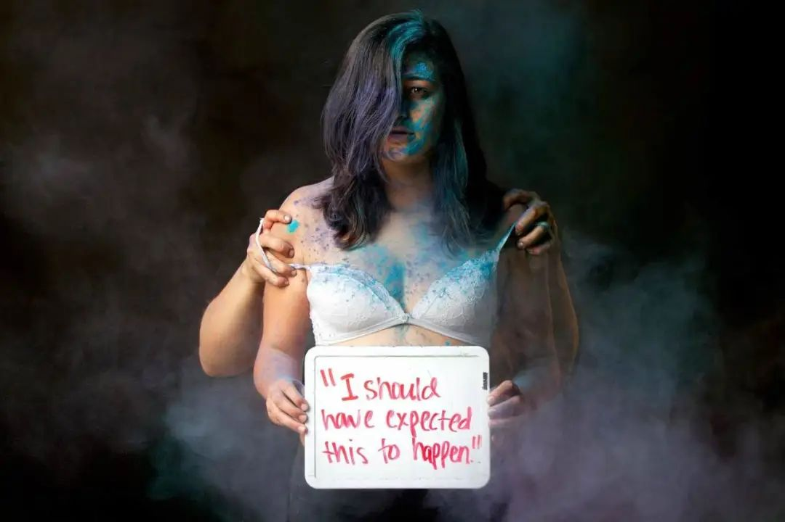

性犯罪受害者在现代刑事司法中的困境

作者：Qi Yu
插图：Yana Mazurkevich
编辑：hurrah
特别感谢：TJ，北风儿，paper，朝酒，小安
作者Yu Qi是在澳大利亚待了3年的留学生。之所以选择投稿，既是希望自己所学的东西可以学以致用，也同样是源于最近频繁曝出的相关新闻，想去做点什么为ta们也为了自己。
根据澳洲国家统计局2014-2015的数据显示，性犯罪的报案率仅为25%，低于其他大多数种类的犯罪；像这样的数据在其他国家中也不难被发现，性犯罪报案率通常不会高于30% (Morgan and Clare 2017, 36)。中国大陆似乎没有公开的性犯罪调查结果，也没有任何数据证明国内性犯罪的报案率比其他国家高或者低。
刑事案件进入刑事司法系统进行处理的第一步是认识到犯罪的发生。诚然根据《中华人民共和国刑法》，强奸被定义为违背妇女意志，使用暴力，胁迫或其他手段，强行与妇女发生性交的行为，或者故意与不满14周岁的幼女发生性关系的行为；我国刑法也有对暴力，威胁或者其他方法强制猥亵他人或者侮辱妇女这一行为的规定。可能是由于刑法条文本身或者对于性犯罪的刻板形象，似乎在大众脑海里性犯罪是永远伴随着伤痕累累的肢体暴力。
由此也就有了一系列对于生活中更为常见的性犯罪行为的合理化，例如：酒吧外捡尸、约会强奸、婚内强奸、熟人强奸或者猥亵。当犯罪行为没有被当事人甚至社会意识到是犯罪时，那么公正的处理只能变成幻想；同时当事人没有意识到她们的遭遇是性犯罪时，她们内心的痛苦可能也不会消失。
广义上来讲，学校、医院、福利机构、立法机构等都是刑事司法系统的一部分，换句话说是能够对刑事司法系统产生影响的部分。这些机构虽然无法直接干涉个案的司法程序，但是对于提升公众对犯罪的认知至关重要。
我在澳洲就读的学校里，随处都贴着有关于性骚扰、两性平等、尊重性少数和什么是健康的亲密关系的宣传海报，同时这些海报上也明确的告知有哪些帮助是可以获取的。与这些工作相对应的是，澳洲那边有更多的人更明确地知道，关于性行为性接触哪些是犯罪哪些是不合适的，比如：很多留学的女性遇到性犯罪后是经过学校同学的提醒、老师的鼓励而明确了解事情的性质进而选择报警或者不报。
我观察到，有些我在国内的女性朋友把非自愿情况下发生的性关系，当成是不希望发生的、但又难以避免的倒霉事，而不是严肃的犯罪行为；而男性朋友对于性犯罪的认知则更加微妙，本来明确的犯罪行为，如果加上了一些定语和环境因素那么它就不是犯罪，例如网友面基、恋爱关系已经确立、10点以后还愿意两人独自在私密空间相处……
我在发现这点之后，惊讶之余也在想我自己在学习犯罪学之前似乎也没好到哪里去。
就算是跨过了第一步，明晰了自己的遭遇并勇敢的去完成了报案的程序，但性犯罪受害者们在现代司法系统中寻求公正的长征也才刚刚开始。
根据一项参考了五个国家从1990年代到现在的数据，100个被警局记录的性犯罪举报中只有20个会被法庭受理，只有约11.5个的案件会被最终以性犯罪的罪名定罪(Daly and Sarre 2017, 366)。这一数据告诉了我们性犯罪受害者在现代司法过程中寻求公正的难度之大。

我个人认为这一现象主要原因包括：1）性犯罪案件的特殊性使其难以符合正当程序模型（Due Process Model）对于法律有罪的要求；2）社会环境与刑事司法实践相互作用造成了工作人员对受害者的预判，并间接影响案件的结果以及对受害者的二次伤害。
正当程序模型是分析、描述以及指导司法实践的常用工具。一般来讲，正当程序模型强调对个人权力的保护和司法决定的正确性以及准确性，使其相比犯罪控制模型更常见于较严重的案件的处理。在这一核心观念下，指控一个性犯罪的嫌疑人需要的不仅仅是证明他在事实上有罪，更需要证明他在法律上有罪，在调查过程突出了对嫌疑人的程序保障和无罪推定的应用。
由于性犯罪的隐匿性，性犯罪通常难以取证。在司法实践中可能有些案件能取得的证据只有双方的口供，也就是两个不同版本的故事；这样显然是在法律上难以证明有罪。同时，由于性这一行为本身并不是犯罪，所以在处理熟人强奸，约会强奸的报案时，对于性行为是否为自愿的认定也存在很大的困难。因此受害者们往往面临着一种困境，在遭遇性犯罪时奋力反抗可能能在事后得到更公正的处理，但是在事发过程中可能会遭遇更大的生命安全上的风险；但是不激烈反抗可能就算报案了也不会被立案（缺乏法律上的证据）。

性犯罪受害者在与刑事司法系统接触时的遭遇，也往往会受到社会上强奸迷思和司法工作者对受害者预判的影响。对于报假案比例的夸大（事实上与其他类型犯罪没有显著区别）和司法工作者对于受害者的偏见是广泛存在的。这种偏见会影响甚至决定工作人员处理案件的方向，这会使他们更有可能忽视或者错误的处理与其预期不相符的证据(Elintib et al. 2018; Patterson 2011)。
同时受害人与嫌疑犯本身的特质也会影响她们在司法系统中的可信度，进而影响案件处理的结果和她们二次受害的可能性。总的来讲，年纪太小的，少数族裔的，被熟人性侵/强奸的，没有事发后马上报案的受害者们的案件不太可能被起诉；因为刑事司法系统将她们预判为不太可信的。而这样的受害者也更可能觉得自己经历了二次受害，她们可能会感到不被相信，非人化，无价值感并更加的情绪化。她们也会对刑事司法系统感到失望；并预测如果在未来有受害情况发生她们不会再次寻求司法系统的帮助 (Patterson 2011, 341)。
对于那些法律工作人员看来难以定罪或起诉的案件，二次受害甚至可能被用于影响受害者决定是否撤销案件。简而言之，二次受害是性犯罪低报案，起诉和定罪率的原因之一，也是性犯罪受害者在刑事司法系统中的一大挑战 (Elintib et al. 2018, 2)。
综上所述，性犯罪由于其特殊性，受害者往往难以得到来自正义女神的眷顾。对于这一类案件，我认为法律存在的意义更多的体现在符号性而不是工具性上。与法律对于这些案件处理结果上的无力相比，它更好的完成了其设定界限，加强对是非判断的群众认知和表面态度的象征性作用。法律是有局限性的，法律有时也仅仅只能决定法律层面的是非，而不是事实层面的。
同时刑事司法系统也不是万能的，这也是为什么广义上包括医疗教育社会福利等都可以被视为对刑事司法的补充。刑事司法系统包括法庭，他们真正的对象是公众而不是案件受害者，因为普遍来讲，受害者并没有对量刑和判决的决定权。
当司法救济在性犯罪的处理上难以实现，并且短期内无法改变的情况下，就有必要考虑引入其他社会服务或者机制（例如与精神卫生系统和急救医疗系统合作，去帮助受害者减轻痛苦和对其生活造成的负面影响）。就如同现代刑事司法认为，精神疾病患者在某些情况下不用承担刑事责任。但是这等于他们不用付出任何代价或者他们完全不受任何管控吗？并不是的，只是刑事司法系统没有能力承担治疗和管理精神疾患的能力，因而交由健康系统去处理。
在我看来，性犯罪不仅仅是对于受害者个人的挑战与困境，同样也是社会环境的结果，性犯罪并不是单纯依靠刑事司法系统就可以全部大包大揽去解决的。因此，认为性受害者在无法得到司法救济时，就必须全部自己承担后果，在我看来是不合理的；其他社会服务的介入是必要的。社会环境与司法实践息息相关，刑事案件本身也不仅仅只能在司法系统中去理解。法律上得不到公道，那么是否有可以疗伤的地方呢？是否可以从家人朋友和其他专业人士那里得到支持呢？减少歧视，减少错误的认识，看到更多的事实可能是目前我们最容易做到的。
Justice should be done, but not always have to be in justice system.
参考文献：
1. Daly, Kathleen and Rick Sarre. 2017. “Criminal justice system: Aims and Processes”. In Crime and Justice: A Guide to Criminology, fifth edition, edited by Darren Palmer, Willem De Lint and Derek Dalton, 357-376. Sydney, Thomson Reuters.
2. Elntib, Stamatis, Philip McPherson, Maria Loannou and Daniel Addy. 2018. “When Sex is More Than Just Sex: Evaluating Police Perspectives Regarding the Challenges in Interviewing Victims of Sexual Offences in Jamaica.” Policing and Society: 1-21. 10.1080/10439463.2018.1511712
3. Morgan, Frank and Joseph Clare. 2017. “The Distribution of Crime Over Populations, Space and Time”. In Crime and Justice: A Guide to Criminology, fifth edition, edited by Darren Palmer, Willem De Lint and Derek Dalton, 27-53. Sydney, Thomson Reuters.
4. Patterson, Debra. 2011. “The Linkage Between Secondary Victimization by Law Enforcement and Rape Case Outcomes.” Journal of Interpersonal Violence 26(2): 328-347. 10.1177/08862605103628891
5. Sexual Assault Series: Dear Brock Turner
https://www.facebook.com/pages/category/Photographer/yanamazurkevichphoto/photos/